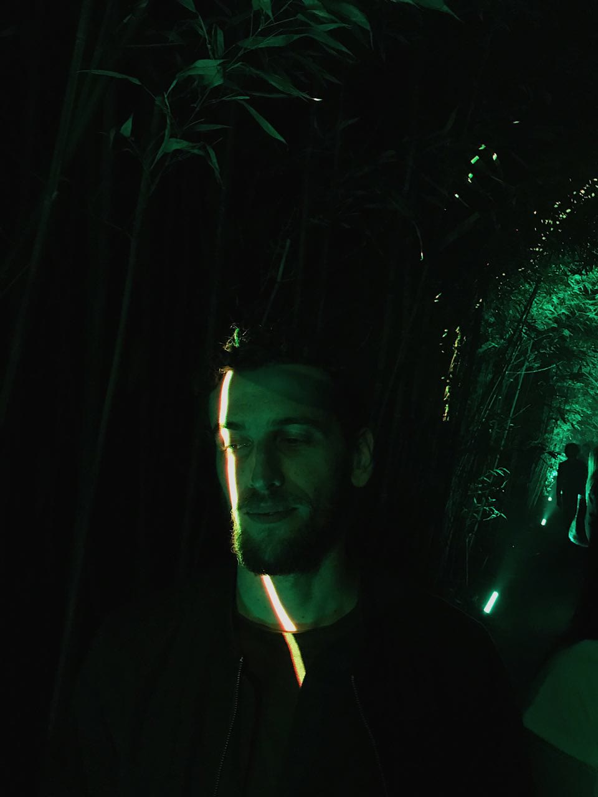

Compositore, sound designer, artista intermediale.
Docente di multimedialità, Dipartimento di Musica Elettronica e Scienze del Suono. Corsi fra cui «Composizione Audiovisiva Integrata».
Masterclass sul pipeline di immagine e video AI e su TouchDesigner come motore scenografico in tempo reale.
Contributo accademico sulla respazializzazione ambisonica di «Thema» e «Visage» di Luciano Berio.

Giovanni Magaglio è compositore, sound designer e artista intermediale con base a Firenze.
La sua pratica attraversa la composizione elettroacustica, la spazializzazione ambisonica e multicanale, il video design e la performance audiovisiva dal vivo. Lavora sul confine fra suono, spazio e immagine in tempo reale, con TouchDesigner come strumento centrale.
Ha collaborato con istituzioni fra cui Tempo Reale ed è membro del collettivo Frazioni Residue. I suoi lavori sono stati presentati in produzioni operistiche, festival e contesti installativi internazionali, da Mutek Montréal al teatro d'opera.
↓ Scarica il CV (PDF)